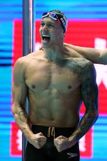

My Hero
Caeleb Remel Dressel, born August 16, 1996, is an American freestyle and butterfly swimmer who specializes in the sprint events.
He currently represents the Cali Condors which is part of the International Swimming League. He won seven gold medals at the 2017 World Aquatics Championships in Budapest and a record eight medals, including six gold, at the 2019 World Aquatics Championships in Gwangju. Dressel is a two-time Olympic gold medalist and currently holds the world record in the 100 meter butterfly LCM and 50 meter freestyle SCM. Dressel holds the American records in 50-meter and 100-meter freestyle and in 50-meter and 100-meter butterfly LCM. He also holds the short course records in 50-yard and 100-yard freestyle events, the 100-yard butterfly, and the 200-yard individual medley, and formerly in the 100-yard breaststroke.
I chose him as my hero because he is not only one of the most talented and famous athletes I know, but he is also a really successful student, and a very charasmatic person. Everyone he meets says he brings light into the room, and pushes everyone else to be the best person they can be. He is a graduate of the Univeristy of Florida and he is planning a to attend graduate school. He has his priorities striaght and he knows what he wants to do in life. He has lots of support groups, fans, sponsorships, and his current occupation, swimming, is what he loves to do everyday. I want to have an occupation that I love to do as well. I aspire to be as successful as him in both academics and athletics.
